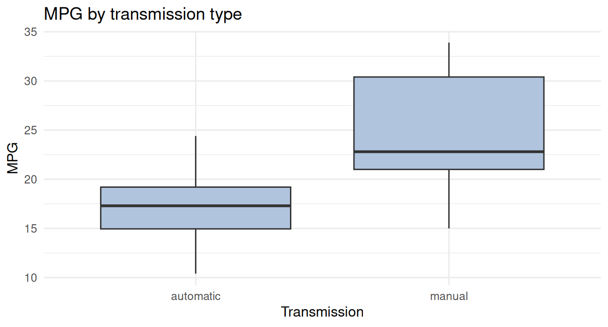
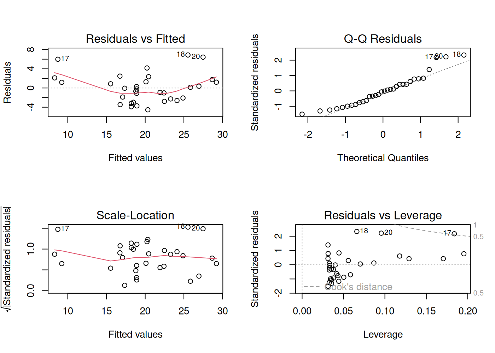
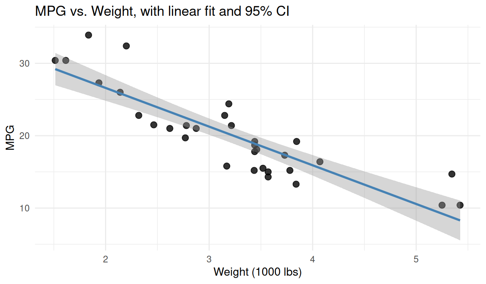
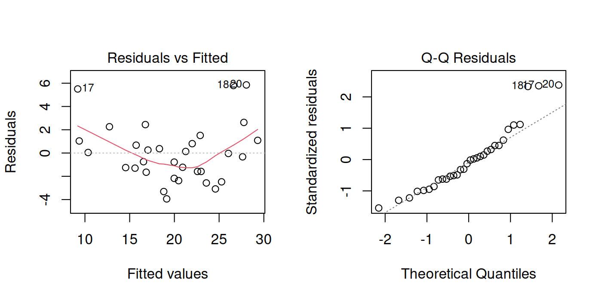
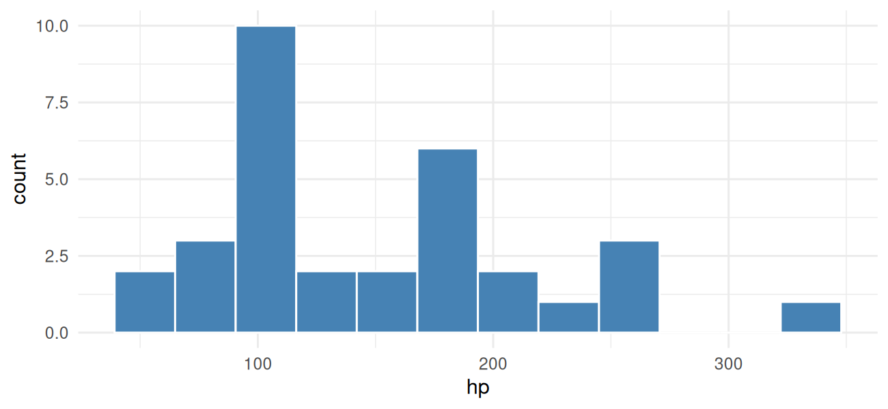

Lesson 5 of 7 · Course overview
R was built by statisticians, so the basic statistics tools are right there in the base language. This lesson covers the four things you’ll do most often:
We’ll keep using mtcars so you can compare the numbers
to the plots from Lesson 4.
library(dplyr)
library(ggplot2)
cars <- mtcars |>
tibble::rownames_to_column("model") |>
tibble::as_tibble()The most common single-variable summaries:
mean(cars$mpg)#> [1] 20.09median(cars$mpg)#> [1] 19.2sd(cars$mpg) # standard deviation#> [1] 6.027var(cars$mpg) # variance#> [1] 36.32min(cars$mpg)#> [1] 10.4max(cars$mpg)#> [1] 33.9range(cars$mpg)#> [1] 10.4 33.9quantile(cars$mpg, probs = c(0.25, 0.5, 0.75))#> 25% 50% 75%
#> 15.43 19.20 22.80IQR(cars$mpg)#> [1] 7.375summary() prints a quick five-number summary plus the
mean — handy for a first look at any variable or data frame:
summary(cars$mpg)#> Min. 1st Qu. Median Mean 3rd Qu. Max.
#> 10.4 15.4 19.2 20.1 22.8 33.9summary(cars)#> model mpg cyl disp hp
#> Length :32 Min. :10.4 Min. :4.00 Min. : 71.1 Min. : 52.0
#> N.unique :32 1st Qu.:15.4 1st Qu.:4.00 1st Qu.:120.8 1st Qu.: 96.5
#> N.blank : 0 Median :19.2 Median :6.00 Median :196.3 Median :123.0
#> Min.nchar: 7 Mean :20.1 Mean :6.19 Mean :230.7 Mean :146.7
#> Max.nchar:19 3rd Qu.:22.8 3rd Qu.:8.00 3rd Qu.:326.0 3rd Qu.:180.0
#> Max. :33.9 Max. :8.00 Max. :472.0 Max. :335.0
#> drat wt qsec vs am
#> Min. :2.76 Min. :1.51 Min. :14.5 Min. :0.000 Min. :0.000
#> 1st Qu.:3.08 1st Qu.:2.58 1st Qu.:16.9 1st Qu.:0.000 1st Qu.:0.000
#> Median :3.69 Median :3.33 Median :17.7 Median :0.000 Median :0.000
#> Mean :3.60 Mean :3.22 Mean :17.8 Mean :0.438 Mean :0.406
#> 3rd Qu.:3.92 3rd Qu.:3.61 3rd Qu.:18.9 3rd Qu.:1.000 3rd Qu.:1.000
#> Max. :4.93 Max. :5.42 Max. :22.9 Max. :1.000 Max. :1.000
#> gear carb
#> Min. :3.00 Min. :1.00
#> 1st Qu.:3.00 1st Qu.:2.00
#> Median :4.00 Median :2.00
#> Mean :3.69 Mean :2.81
#> 3rd Qu.:4.00 3rd Qu.:4.00
#> Max. :5.00 Max. :8.00For grouped summaries, use dplyr from Lesson 3:
cars |>
group_by(cyl) |>
summarise(
n = n(),
mean_mpg = mean(mpg),
sd_mpg = sd(mpg),
median_mpg = median(mpg),
.groups = "drop"
)#> # A tibble: 3 × 5
#> cyl n mean_mpg sd_mpg median_mpg
#> <dbl> <int> <dbl> <dbl> <dbl>
#> 1 4 11 26.7 4.51 26
#> 2 6 7 19.7 1.45 19.7
#> 3 8 14 15.1 2.56 15.2Before running a t-test or fitting a model, make a plot. A boxplot or histogram will tell you in three seconds whether the assumptions you’re about to make (normality, equal variance, no crazy outliers) are even close to true.
A t-test answers: “Are the means of two groups different by more than I’d expect from random sampling?”
Question: do manual cars get better gas mileage than automatic cars on average?
ggplot(cars, aes(x = factor(am, labels = c("automatic", "manual")), y = mpg)) +
geom_boxplot(fill = "lightsteelblue") +
labs(x = "Transmission", y = "MPG", title = "MPG by transmission type") +
theme_minimal()
The boxplot suggests yes. Let’s quantify it:
t_result <- t.test(mpg ~ am, data = cars)
t_result#>
#> Welch Two Sample t-test
#>
#> data: mpg by am
#> t = -3.8, df = 18, p-value = 0.001
#> alternative hypothesis: true difference in means between group 0 and group 1 is not equal to 0
#> 95 percent confidence interval:
#> -11.28 -3.21
#> sample estimates:
#> mean in group 0 mean in group 1
#> 17.15 24.39How to read the output:
t = -3.77 — the test statistic. Bigger
absolute value = stronger evidence the means differ.df — degrees of freedom (Welch’s
t-test uses fractional df, that’s fine).p-value = 0.001374 — probability of
seeing a difference this large (or larger) if the true means were
actually equal. By the conventional cutoff of 0.05, this is
“significant.”95 percent confidence interval: -11.28, -3.21
— we’re 95% confident the true difference (automatic minus manual) is
between about -11 and -3 MPG.mean in group 0 = 17.15, mean in group 1 = 24.39
— the actual group means.So manual cars in this dataset get around 7 MPG more than automatic cars on average, and the difference is statistically significant.
You can pull individual pieces out programmatically:
t_result$p.value#> [1] 0.001374t_result$conf.int#> [1] -11.28 -3.21
#> attr(,"conf.level")
#> [1] 0.95t_result$estimate#> mean in group 0 mean in group 1
#> 17.15 24.39A tiny effect with a huge sample will be “statistically significant.” A huge effect with a small sample may not be. Always look at the confidence interval and the effect size, not just the p-value.
Also: this comparison ignores that manuals tend to be in different cars than automatics (lighter, fewer cylinders, etc.). The honest answer to “does transmission cause better MPG” requires a model that controls for those things — that’s what regression is for.
Correlation measures how strongly two numeric variables move together, on a scale of -1 to 1.
cor(cars$wt, cars$mpg)#> [1] -0.8677A correlation of about -0.87: strong negative association. As weight goes up, MPG goes down.
cor.test() adds a hypothesis test (is the correlation
different from zero?) and a confidence interval:
cor.test(cars$wt, cars$mpg)#>
#> Pearson's product-moment correlation
#>
#> data: cars$wt and cars$mpg
#> t = -9.6, df = 30, p-value = 0.0000000001
#> alternative hypothesis: true correlation is not equal to 0
#> 95 percent confidence interval:
#> -0.9338 -0.7441
#> sample estimates:
#> cor
#> -0.8677For a whole correlation matrix:
cars |>
select(mpg, hp, wt, drat, qsec) |>
cor() |>
round(2)#> mpg hp wt drat qsec
#> mpg 1.00 -0.78 -0.87 0.68 0.42
#> hp -0.78 1.00 0.66 -0.45 -0.71
#> wt -0.87 0.66 1.00 -0.71 -0.17
#> drat 0.68 -0.45 -0.71 1.00 0.09
#> qsec 0.42 -0.71 -0.17 0.09 1.00Regression is the workhorse of applied statistics. The basic question: “How does the response variable change as the predictors change?”
Predict MPG from weight:
fit1 <- lm(mpg ~ wt, data = cars)
fit1#>
#> Call:
#> lm(formula = mpg ~ wt, data = cars)
#>
#> Coefficients:
#> (Intercept) wt
#> 37.29 -5.34The formula mpg ~ wt reads as “model mpg as
a function of wt.” lm() returns a fitted model
object — print it for a quick look, summary() for the full
output:
summary(fit1)#>
#> Call:
#> lm(formula = mpg ~ wt, data = cars)
#>
#> Residuals:
#> Min 1Q Median 3Q Max
#> -4.543 -2.365 -0.125 1.410 6.873
#>
#> Coefficients:
#> Estimate Std. Error t value Pr(>|t|)
#> (Intercept) 37.285 1.878 19.86 < 0.0000000000000002 ***
#> wt -5.344 0.559 -9.56 0.00000000013 ***
#> ---
#> Signif. codes: 0 '***' 0.001 '**' 0.01 '*' 0.05 '.' 0.1 ' ' 1
#>
#> Residual standard error: 3.05 on 30 degrees of freedom
#> Multiple R-squared: 0.753, Adjusted R-squared: 0.745
#> F-statistic: 91.4 on 1 and 30 DF, p-value: 0.000000000129What’s important here:
wt = -5.34 means each
additional 1000 lbs of weight is associated with a 5.34-MPG
decrease, on average.Pr(>|t|) for wt: the
p-value for “is this coefficient different from 0?” Tiny — yes.Add more predictors with +:
fit2 <- lm(mpg ~ wt + hp + factor(cyl), data = cars)
summary(fit2)#>
#> Call:
#> lm(formula = mpg ~ wt + hp + factor(cyl), data = cars)
#>
#> Residuals:
#> Min 1Q Median 3Q Max
#> -4.261 -1.032 -0.321 0.928 5.395
#>
#> Coefficients:
#> Estimate Std. Error t value Pr(>|t|)
#> (Intercept) 35.8460 2.0410 17.56 0.00000000000000027 ***
#> wt -3.1814 0.7196 -4.42 0.00014 ***
#> hp -0.0231 0.0120 -1.93 0.06361 .
#> factor(cyl)6 -3.3590 1.4017 -2.40 0.02375 *
#> factor(cyl)8 -3.1859 2.1705 -1.47 0.15370
#> ---
#> Signif. codes: 0 '***' 0.001 '**' 0.01 '*' 0.05 '.' 0.1 ' ' 1
#>
#> Residual standard error: 2.44 on 27 degrees of freedom
#> Multiple R-squared: 0.857, Adjusted R-squared: 0.836
#> F-statistic: 40.5 on 4 and 27 DF, p-value: 0.0000000000487Now we’re estimating the effect of weight after controlling for horsepower and cylinder count.
factor(cyl) tells R to treat cyl as a
categorical variable rather than a number. The output gives you the
difference between each level and a reference level (here,
4-cylinder).
anova() tests whether the bigger model is significantly
better than the smaller one:
anova(fit1, fit2)#> Analysis of Variance Table
#>
#> Model 1: mpg ~ wt
#> Model 2: mpg ~ wt + hp + factor(cyl)
#> Res.Df RSS Df Sum of Sq F Pr(>F)
#> 1 30 278
#> 2 27 161 3 118 6.58 0.0018 **
#> ---
#> Signif. codes: 0 '***' 0.001 '**' 0.01 '*' 0.05 '.' 0.1 ' ' 1A small p-value means the extra predictors are pulling weight (so to speak).
AIC() and BIC() are alternative
model-comparison metrics — lower is better:
AIC(fit1, fit2)#> df AIC
#> fit1 3 166.0
#> fit2 6 154.5Before trusting a regression, look at the diagnostic plots. R’s
built-in plot() on a model gives you four:
par(mfrow = c(2, 2))
plot(fit1)
par(mfrow = c(1, 1))What you’re looking for:
Once you have a model, you can predict new values:
new_cars <- tibble::tibble(wt = c(2.0, 3.5, 5.0))
predict(fit1, newdata = new_cars)#> 1 2 3
#> 26.60 18.58 10.56Add a confidence interval for the mean response:
predict(fit1, newdata = new_cars, interval = "confidence")#> fit lwr upr
#> 1 26.60 24.824 28.37
#> 2 18.58 17.433 19.73
#> 3 10.56 8.249 12.88Or a prediction interval for a single new observation (wider, because individual cars vary):
predict(fit1, newdata = new_cars, interval = "prediction")#> fit lwr upr
#> 1 26.60 20.128 33.06
#> 2 18.58 12.254 24.90
#> 3 10.56 3.926 17.20A simple regression line is one geom away in ggplot:
ggplot(cars, aes(x = wt, y = mpg)) +
geom_point(size = 2.5, alpha = 0.8) +
geom_smooth(method = "lm", se = TRUE, color = "steelblue") +
labs(
title = "MPG vs. Weight, with linear fit and 95% CI",
x = "Weight (1000 lbs)", y = "MPG"
) +
theme_minimal()
geom_smooth(method = "lm") is fitting the same model as
lm(mpg ~ wt) under the hood and shading the confidence
band.
wilcox.test() — non-parametric alternative to the
t-test (for non-normal data).chisq.test() — chi-square test for independence between
two categorical variables.prop.test() — comparing proportions across groups.aov() — ANOVA, for comparing means across more than two
groups.glm(..., family = binomial) — logistic regression, for
binary outcomes.The pattern is the same across all of them: a formula, a data argument, a summary or print of the result.
A complete mini-analysis: is MPG associated with weight, controlling for horsepower? Report the model, check assumptions, and predict MPG for a hypothetical new car.
fit <- lm(mpg ~ wt + hp, data = cars)
summary(fit)#>
#> Call:
#> lm(formula = mpg ~ wt + hp, data = cars)
#>
#> Residuals:
#> Min 1Q Median 3Q Max
#> -3.941 -1.600 -0.182 1.050 5.854
#>
#> Coefficients:
#> Estimate Std. Error t value Pr(>|t|)
#> (Intercept) 37.22727 1.59879 23.28 < 0.0000000000000002 ***
#> wt -3.87783 0.63273 -6.13 0.0000011 ***
#> hp -0.03177 0.00903 -3.52 0.0015 **
#> ---
#> Signif. codes: 0 '***' 0.001 '**' 0.01 '*' 0.05 '.' 0.1 ' ' 1
#>
#> Residual standard error: 2.59 on 29 degrees of freedom
#> Multiple R-squared: 0.827, Adjusted R-squared: 0.815
#> F-statistic: 69.2 on 2 and 29 DF, p-value: 0.00000000000911Coefficient interpretations: holding horsepower constant, each additional 1000 lbs of weight is associated with a -3.88-MPG decrease. Holding weight constant, each additional horsepower is associated with a -0.0318-MPG decrease.
Quick diagnostic look:
par(mfrow = c(1, 2))
plot(fit, which = c(1, 2))
par(mfrow = c(1, 1))Predict MPG for a 3500-lb car with 130 hp:
predict(fit, newdata = tibble::tibble(wt = 3.5, hp = 130), interval = "prediction")#> fit lwr upr
#> 1 19.52 14.1 24.95That’s a complete (if minimal) regression analysis: fit, interpret, diagnose, predict.
Compute the mean, median, standard deviation, and IQR of
cars$hp. Are the mean and median similar? What does that
tell you about the distribution?
mean(cars$hp)#> [1] 146.7median(cars$hp)#> [1] 123sd(cars$hp)#> [1] 68.56IQR(cars$hp)#> [1] 83.5The mean is noticeably higher than the median, which means the distribution is right-skewed — there are a few high-horsepower outliers pulling the mean up. A boxplot or histogram would confirm.
ggplot(cars, aes(x = hp)) +
geom_histogram(bins = 12, fill = "steelblue", color = "white") +
theme_minimal()
Test whether 4-cylinder cars have a different mean MPG than 8-cylinder cars. Report the p-value, the 95% CI, and a one-sentence interpretation.
sub <- cars |> filter(cyl %in% c(4, 8))
t.test(mpg ~ cyl, data = sub)#>
#> Welch Two Sample t-test
#>
#> data: mpg by cyl
#> t = 7.6, df = 15, p-value = 0.000002
#> alternative hypothesis: true difference in means between group 4 and group 8 is not equal to 0
#> 95 percent confidence interval:
#> 8.319 14.809
#> sample estimates:
#> mean in group 4 mean in group 8
#> 26.66 15.10The mean MPG of 4-cylinder cars is roughly 11 MPG higher than 8-cylinder cars (95% CI ~9 to 13), and the p-value is tiny — the difference is far more than chance.
Fit a model that predicts MPG from weight, horsepower, and cylinder
count (treat cyl as a factor). Which coefficients are
statistically significant? What’s the R-squared?
fit <- lm(mpg ~ wt + hp + factor(cyl), data = cars)
summary(fit)#>
#> Call:
#> lm(formula = mpg ~ wt + hp + factor(cyl), data = cars)
#>
#> Residuals:
#> Min 1Q Median 3Q Max
#> -4.261 -1.032 -0.321 0.928 5.395
#>
#> Coefficients:
#> Estimate Std. Error t value Pr(>|t|)
#> (Intercept) 35.8460 2.0410 17.56 0.00000000000000027 ***
#> wt -3.1814 0.7196 -4.42 0.00014 ***
#> hp -0.0231 0.0120 -1.93 0.06361 .
#> factor(cyl)6 -3.3590 1.4017 -2.40 0.02375 *
#> factor(cyl)8 -3.1859 2.1705 -1.47 0.15370
#> ---
#> Signif. codes: 0 '***' 0.001 '**' 0.01 '*' 0.05 '.' 0.1 ' ' 1
#>
#> Residual standard error: 2.44 on 27 degrees of freedom
#> Multiple R-squared: 0.857, Adjusted R-squared: 0.836
#> F-statistic: 40.5 on 4 and 27 DF, p-value: 0.0000000000487wt has a clearly significant negative coefficient.
hp and the cylinder-count contrasts get smaller and may no
longer be significant once weight is in the model — they’re correlated
with weight (heavier cars tend to have more cylinders and more
horsepower), so a lot of the “effect” of cylinders is really just
weight. Adjusted R-squared should be around 0.83.
You can now load data, manipulate it, plot it, and run real statistical analyses on it. The last two lessons stop adding new tools and start showing how to package up an analysis so someone else (or future-you) can run it again. Lesson 6 is R Markdown — the document format this whole course is written in.